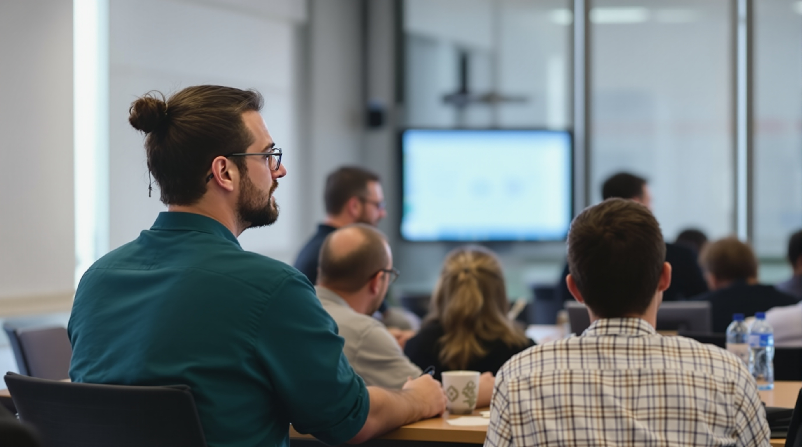

17 oktober, 2025| Göteborg
Bortom React: Bygg framtidens frontend idag
 Moderna frontend-ramverk och arkitekturer Keynote: Frontendens Tillstånd 2025 - Bortom React, Vue och Svelte:Utforska hur frontendlandskapet förändras 2025. Vi visar vilka tekniker som blir viktiga bortom de klassiska ramverken React, Vue och Svelte. Seminariet ger en översikt över nya trender, verktyg och mönster som formar webbutvecklingens framtid.
Vi fokuserar inte på ett specifikt ramverk. Istället lär vi ut koncept och mönster som gör dig till en flexibel och framtidssäker frontendutvecklare. Upptäck hur du kan kombinera olika tekniker för att skapa snabbare, skalbara och användarvänliga webblösningar.
Genom konkreta exempel och case studies visar vi hur nya frontendtrender används i verkliga projekt. Du får inspiration och idéer som du direkt kan använda i ditt dagliga arbete som frontendutvecklare.
Seminariet ger möjlighet att diskutera framtidens frontend med andra utvecklare och experter. Dela erfarenheter, ställ frågor och bygg nätverk som hjälper dig att ligga steget före i en snabbt föränderlig teknologivärld.
Lightning Talks: Innovationer inom utvecklarupplevelse.I den här sessionen får du se hur frontendutveckling förändras 2025 och vilka tekniker som blir viktiga bortom React, Vue och Svelte. Vi visar nya trender, verktyg och mönster som formar webbutvecklingens framtid.
Vi fokuserar inte på ett specifikt ramverk. Istället lär vi ut koncept och mönster som gör dig till en flexibel och framtidssäker frontendutvecklare. Upptäck hur du kan kombinera olika tekniker för att skapa snabbare, skalbara och användarvänliga webblösningar.
Genom konkreta exempel och case studies visar vi hur nya frontendtrender används i verkliga projekt. Du får idéer som du direkt kan använda i ditt dagliga arbete som frontendutvecklare.
Seminariet ger möjlighet att diskutera framtidens frontend med andra utvecklare och experter. Dela erfarenheter, ställ frågor och bygg nätverk som hjälper dig att ligga steget före i en snabbt föränderlig teknologivärld.
Workshop: Bygga skalbara frontends med React Server components.I den här workshopen får du praktisk erfarenhet av att bygga skalbara frontends med React Server Components. Du lär dig hur man strukturerar applikationer för bättre prestanda och enklare underhåll.Vi visar hur React Server Components kan minska belastningen på klienten, snabba upp laddtider och göra frontendprojekt mer skalbara. Strategierna vi visar fungerar i riktiga produktionsmiljöer.
Genom kodexempel och övningar får du insikt i hur man använder serverkomponenter på ett effektivt sätt. Du lär dig också hur man balanserar server- och klientlogik för bästa resultat.
Workshopen är interaktiv. Du kan ställa frågor, testa idéer och diskutera lösningar med andra frontendutvecklare. Perfekt för att fördjupa dina kunskaper och få inspiration till egna projekt.
18 oktober, 2025| Göteborg
Bortom React: Bygg framtidens frontend idag
 Hands-on session som går igenom serverkomponenter, streaming och effektiva
renderingsmönster
Talk: The Fast Frontend - Moderna tekniker för optimering av prestanda.
Hands-on session som går igenom serverkomponenter, streaming och effektiva
renderingsmönster
Talk: The Fast Frontend - Moderna tekniker för optimering av prestanda.
I den här talken lär du dig moderna tekniker som gör dina webbar snabbare än någonsin. Vi fokuserar på praktiska strategier och verktyg för att optimera frontendprestanda i dagens komplexa webblandskap.
Vi visar konkreta sätt att förbättra laddtider, minska renderingsblockering och optimera nätverkshantering. Du får tips som du kan använda direkt i dina egna projekt.
Talken visar hur du kan mäta och analysera prestanda för att fatta datadrivna beslut. Du lär dig hur verktyg och tekniker kan hjälpa dig att göra appar snabbare och mer effektiva.
Du får möjlighet att diskutera exempel, case studies och bästa praxis med andra frontendutvecklare. Dela erfarenheter och få idéer för att skapa snabbare och mer responsiva webbapplikationer.
Workschop: Från Webpack till Vite till Turbopack - Framtiden för frontend-byggverktyg.I den här workshopen får du lära dig om framtidens verktyg för frontendutveckling. Vi visar hur Webpack, Vite och Turbopack fungerar och hur de kan användas för att skapa snabba och effektiva utvecklingsmiljöer.
Du lär dig hur moderna verktyg kan göra utvecklingen smidigare och byggen snabbare. Vi visar exempel på hur man kan byta mellan verktyg och optimera byggprocessen.
Genom kodexempel och demonstrationer får du insikt i hur man sätter upp och konfigurerar verktygen för olika projekt. Du lär dig också hur du väljer rätt verktyg för rätt situation.
Workshopen ger tid för frågor, diskussion och att testa idéer med andra frontendutvecklare. Perfekt för dig som vill ligga steget före i utvecklingen av byggverktyg.
Lightning Talks: Innovationer inom utvecklarupplevelser.Upplev en serie korta presentationer som snabbt visar de senaste innovationerna inom utvecklarupplevelse. Perfekt för frontendutvecklare som vill hålla sig uppdaterade utan långa sessioner.
Vi fokuserar på nya verktyg, arbetsflöden och metoder som gör utvecklingen snabbare, smidigare och mer produktiv. Upptäck idéer som direkt kan förbättra hur du skriver kod och samarbetar med teamet.
Varje lightning talk visar konkreta exempel från riktiga projekt där innovativa lösningar används. Du får inspiration som du kan använda direkt i dina egna frontendprojekt.
Efter varje presentation finns möjlighet att ställa frågor och diskutera kort med andra utvecklare. Dela erfarenheter och nätverka för att få nya perspektiv på utvecklarupplevelse.
19 oktober, 2025| Göteborg
Bygg inkluderande upplevelser med smarta designsystem
 Designsystem, tillgänglighet och användarupplevelse
Keynote: Design för alla– tillgänglighet som en grundläggande frontendprincip.
Designsystem, tillgänglighet och användarupplevelse
Keynote: Design för alla– tillgänglighet som en grundläggande frontendprincip.
I den här keynoten får du se hur tillgänglighet kan bli en central del av frontendutveckling. Vi visar varför inkluderande design inte bara är en bra vana, utan något som moderna webbapplikationer måste ha.
Vi går igenom konkreta sätt att bygga webbar som fungerar för alla, oavsett funktionsförmåga. Du lär dig hur små förändringar kan ge stor skillnad i användarupplevelsen.
Genom exempel och demonstrationer visar vi verktyg, metoder och tekniker som gör det enklare att arbeta med tillgänglighet. Du kan använda dessa direkt i dina egna frontendprojekt.
Keynoten ger möjlighet att ställa frågor och diskutera med andra utvecklare. Dela erfarenheter och få nya idéer för att bygga inkluderande webblösningar som når alla användare.
Workshop: Bygga och underhålla ett skalbart designsystem.I den här workshopen får du jobba direkt med att bygga och underhålla ett designsystem. Du lär dig hur man skapar komponenter och riktlinjer som kan användas om och om igen i olika projekt och team.
Vi visar hur du kan göra ett designsystem som fungerar även när projekt och team växer. Du lär dig hur man håller designen konsekvent och enkel att anpassa över tid.
Genom exempel och övningar får du tips på vilka verktyg och metoder som gör det lättare att bygga och underhålla ett designsystem i verkliga projekt.
Workshopen ger tid för frågor, diskussioner och att testa idéer tillsammans med andra frontendutvecklare. Du får inspiration och nya idéer som du kan använda i ditt eget arbete.
Talk: Prestanda med mening- optimera React-appar för alla användare.I den här talken lär du dig hur du kan göra dina React-appar snabbare för alla användare. Vi visar varför prestanda inte bara handlar om hastighet, utan också om att göra apparna enkla och bra att använda.
Vi visar konkreta tekniker för att minska laddtider, förbättra rendering och optimera komponenter. Du lär dig hur du kan göra appar både snabba och funktionella utan att kompromissa med användarupplevelsen.
Talken visar exempel och metoder för att analysera, mäta och förbättra prestanda i React-appar. Du får tips på moderna verktyg som ger dig tydliga och datadrivna insikter.
Efter talken kan du ställa frågor och diskutera med andra frontendutvecklare. Dela erfarenheter och få nya idéer för att bygga snabbare, mer tillgängliga och responsiva webbappar.
Talk: Från komponent till helhet- skalbara mönster i modern React-arkitektur.I den här talken lär du dig hur du kan bygga React-appar som fungerar både för små och stora projekt. Vi visar hur du går från enskilda komponenter till hela system som är lätta att utveckla och underhålla.
Vi pratar om hur du kan organisera komponenter, hantera state och planera appens struktur. Det gör att din app kan växa utan att bli svår att förstå eller ändra.
Du får se exempel från riktiga projekt. Vi visar mönster och lösningar som fungerar i verkligheten, så att du kan använda dem direkt i ditt arbete.
Efter talken kan du ställa frågor och diskutera med andra utvecklare. Du får nya idéer och tips för att bygga moderna och skalbara React-appar.